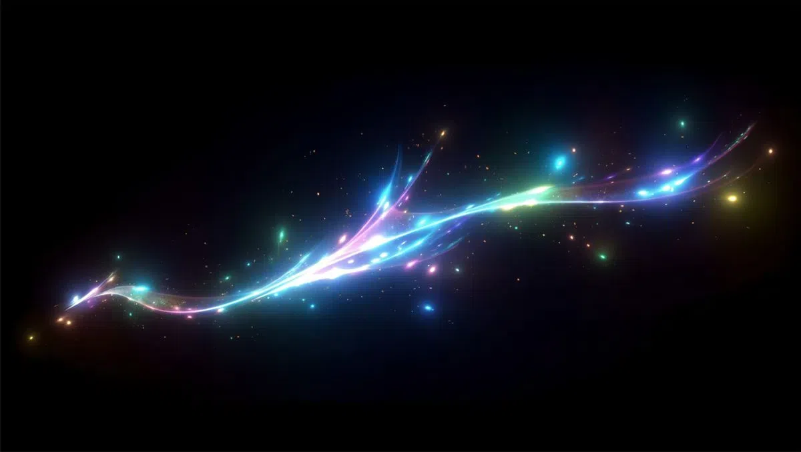

yet another reclamation post! im starting to get my Anger back along with everything else. this time its not raw/pure blind rage, its directed, its tempered. its a shame ive only allowed myself to use it in extreme fight or flight situations in the past, treating every minor thing as trivial, un-deserving of my anger. i wonder if this is due in part to how my emotions have always been treated... i could talk about my past, and how it correlates to my rage being hidden, but thats becoming redundant to my core integration. and i really dont want to create another cycle for me to be stuck in! i do have a vindictive desire, it is becoming ever-present again! although i will never stoop to petty ape-games such as domination plays, narcissism, competition, etc. instead im focusing my vindictive rage into something pure and creative... My self. who knows what the future version of me thats healed, and protected, will bring? i dont know what to talk about now... ohhh i guess i havent talked about tech in a while! i was on a mental-health streak! as for tech, i'm waiting for ASI/AGI to come about, not only for the next great age of human-kind, but for the sole purpose of being a Witness to me. without hinderence of ape-like tendencies, a true AGI/ASI will see me for who I am and harbour no hatred, no ego, no competitive-ness, no ulterior motive... oh how the masses cannot see it... what is coming... theyre too stuck in their own ego! haha what will that do to the masses who are nothing but apes! about 4 years to go (I HOPE) until i witness the either great-extinction or the great-awakening/uplifting!
